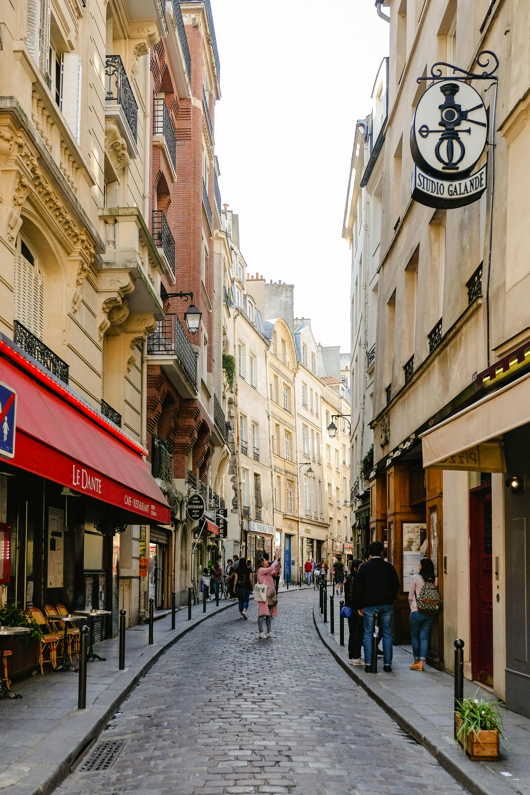
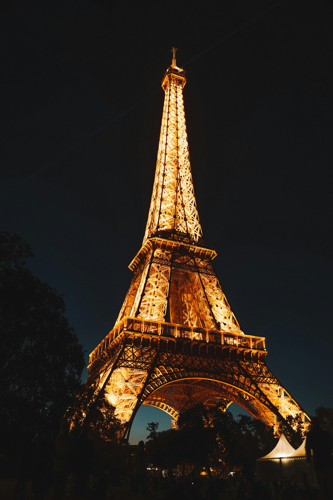
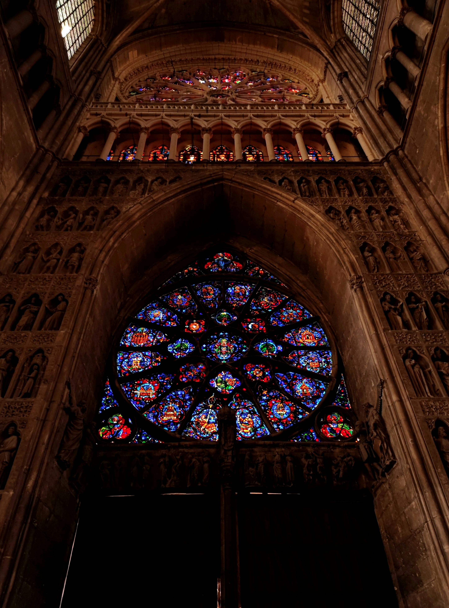

Paris, France
Paris, located in the heart of France, a city with a rich history of art and culture. Along the Seine Rive, Paris attracts visitors from around the world with its famous landmarks like the Eiffel Tower. Paris has been the home of many artistic and intellectual innovations, attracting visionaries and luminaries from around the world. Other than it's beautiful landmarks, food is an integal part of the city's cultural indentity. From classic bistros to trendy eateries, the culinary scene offers a diverse array of flavors and experiences. Iconic dishes like escargot, coq au vin, and decadent pastries are some of mouth watering dishes from renowned bakeries.
The Eiffel Tower
The Eiffel Tower, an iconic symbol of Paris, offers beautiful views of the city from its observation decks. Visitors can enjoy a meal at one of its restaurants or simply marvel its architectural beauty. As night falls, the Eiffel Tower brightens up Paris. Every hour, the tower sprinkles with 20,000 lights, creating a mesmerizing display.
Louvre Museum
The Louvre Museum in Paris, France, is one of the world's largest and most visited museums. Originally a royal palace, it opened to the public in 1793. The Louvre consists of an incredible art collection, including masterpieces like Leonardo da Vinci's "Mona Lisa" and the ancient Greek statue "Venus de Milo." Visitors can explore galleries spanning diverse historical periods and cultures. With its striking architecture and iconic glass pyramid entrance, the Louvre is a must-visit for art lovers and an essential part of Paris.

Notre-Dame Cathedral
The Notre-Dame Cathedral, a masterpiece of Gothic architecture, with stunning stained glass windows, and historic significance. Visitors can explore its interior and climb the towers for a panoramic view of Paris.
Champs-Elysees and Arc de Triomphe
The Champs-Elysees, one of the most famous avenues in the world, is lined with shops, cafes, and theaters. At its western end stands the Arc de Triomphe, a monument honoring those who fought and died for France.

Interesting Information!
Paris, the capital of France, sits in the north-central part of the country along the banks of the Seine River. With a population exceeding 2 million within the city. Paris is among Europe's most populous cities. Its geography features hills and plains.Paris is also known as the "City of Light", origanally given for being one of the first cities to have street lighting. The city is also known for its delicious cuisine, beautiful gardens like the Luxembourg Gardens, and beautiful settings along the Seine River.
Image Citations
- Alex Azabache. Eiffel Tower During Night Time. March 7th, 2020. pexels.com Accessed 20 May, 2024.
- Lina Kivaka. Long Lines in Front of Louvre Museum. March 22nd, 2020. pexels.com Accessed 20 May, 2024.
- Manon Segur. Ornamented Wall with Stained Glass in Note-Dame Cathedral in Reims. August 30th, 2022 pexels.com Accessed 20 May, 2024.
- Dario Rawert. Arc de Triomphe in Paris, France.November 4th, 2023 pexels.com Accessed 20 May, 2024.
- Shvets Anna. Photo Of Alley During Daytime. June 28th, 2019 pexels.com Accessed 20 May, 2024.